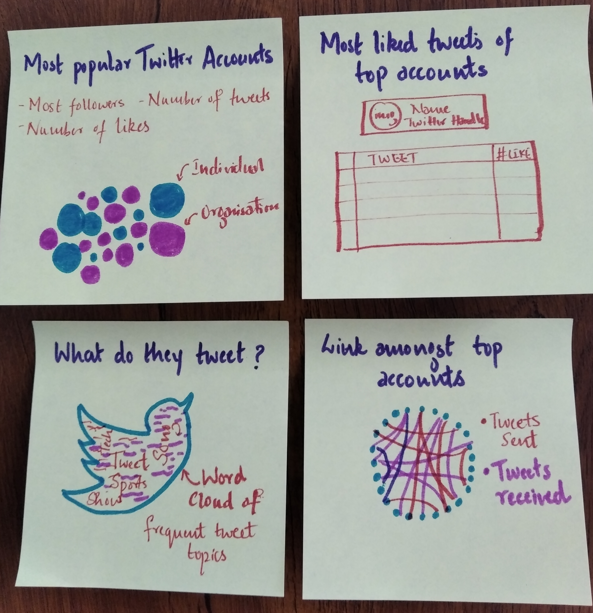

An analysis of how the most followed celebrities use their Twitter accounts
March 2019
Twitter has evolved from being just another social media tool to being official platform for world leaders to communicate their views, celebrities to announce their new projects, companies to advertise their latest products. In this article, we analyse the trends in the Top Twitter accounts of the world in the year 2018.
